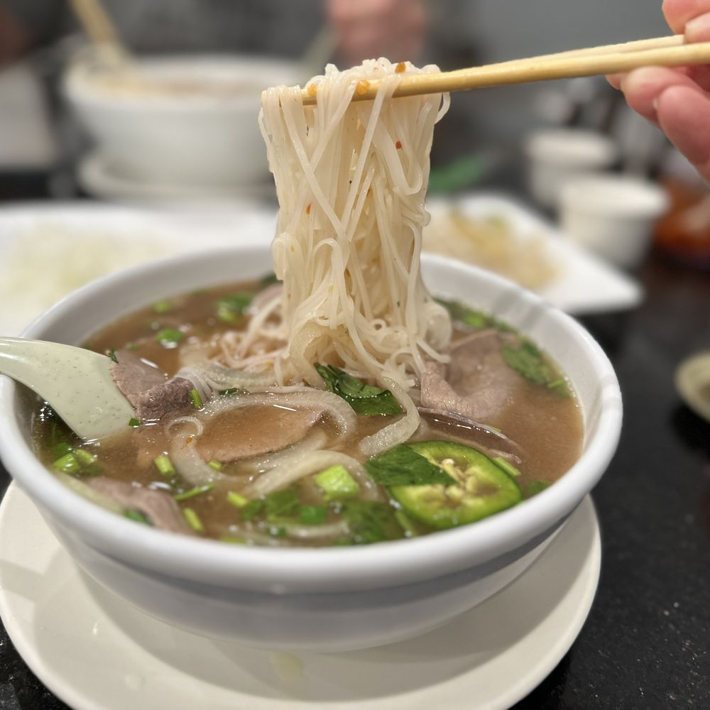

Pho is a Vietnamese noodle soup made with savory broth, rice noodles, herbs, and meat. It is one of the most popular dishes in Vietnamese cuisine. Pho is also one of my favorite foods!
Pho is made with several ingredients. The most important is the broth, which is traditionally simmered with bones and spices.
There are several varieties of pho. Pho Bo is made with beef, while Pho Ga is made with chicken. Both are served with rice noodles and flavorful broth. There is also vegaterian pho!
I love pho because it is warm, filling and flavorful. I get mine with rare steak and brisket, I always but in Siracha sauce, lime juice, bean sprouts and bean sprouts. Despite being so much food, its relatively healthy and inexpensive In my opinion, the best pho is boulder is Boulder Pho.

To learn more about the history and cultural significance of pho Wikipedia's page about pho .
You can also learn more about Vietnam cuisine and culture by visiting Vietnam's official tourism website .